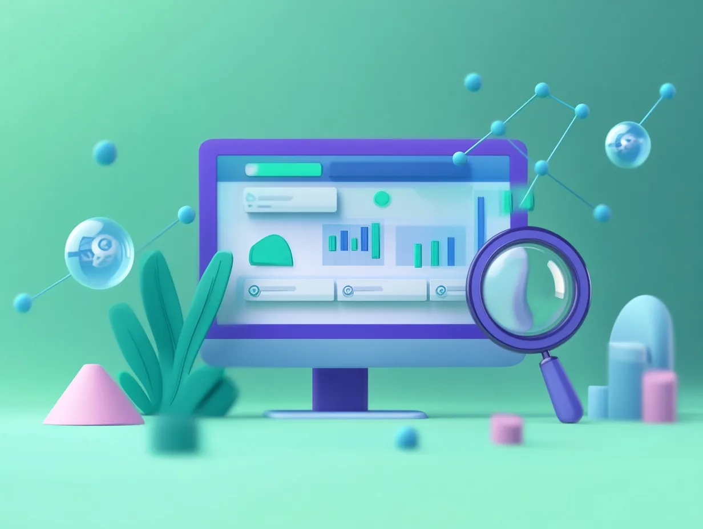

W erze cyfrowej transformacji, sztuczna inteligencja (AI) stała się kluczowym narzędziem w arsenale projektantów stron internetowych. Technologia ta nie tylko usprawnia procesy twórcze, ale również znacząco poprawia wyniki biznesowe. Oto pięć przekonujących powodów, dla których warto zainwestować w rozwiązania oparte na AI przy projektowaniu swojej obecności w sieci.
1. Oszczędność czasu i redukcja kosztów
Tradycyjne projektowanie stron internetowych jest procesem czasochłonnym, wymagającym wielu godzin pracy specjalistów. Narzędzia oparte na AI potrafią znacząco przyspieszyć ten proces:
- Automatyczne generowanie elementów projektu na podstawie prostych wskazówek tekstowych
- Błyskawiczne tworzenie prototypów strony bez konieczności ręcznego kodowania
- Szybka optymalizacja istniejących elementów strony zgodnie z najnowszymi trendami
Dzięki temu właściciele firm mogą zaoszczędzić nawet do 70% czasu i kosztów związanych z projektowaniem i wdrażaniem strony internetowej. Co więcej, szybsze wdrożenie oznacza szybsze dotarcie do klientów i generowanie przychodów.
2. Personalizacja doświadczeń użytkownika
AI umożliwia tworzenie stron, które dostosowują się do indywidualnych potrzeb każdego odwiedzającego:
- Dynamiczne dostosowywanie treści w oparciu o zachowania użytkownika
- Inteligentne systemy rekomendacji produktów i usług
- Personalizowane ścieżki nawigacji dla różnych segmentów odbiorców
Badania pokazują, że strony wykorzystujące personalizację opartą na AI notują wzrost konwersji o 25-30% w porównaniu do stron statycznych. Kiedy użytkownicy czują, że strona "rozumie" ich potrzeby, znacznie chętniej podejmują pożądane działania.
3. Optymalizacja pod kątem wyszukiwarek (SEO)
Algorytmy AI potrafią znacząco poprawić widoczność strony w wynikach wyszukiwania:
- Automatyczna analiza słów kluczowych i optymalizacja treści
- Przewidywanie trendów wyszukiwania i dostosowywanie strategii contentowej
- Ciągła analiza i optymalizacja technicznych aspektów SEO
Strony zoptymalizowane przy pomocy AI często osiągają pozycje w pierwszej dziesiątce wyników wyszukiwania o 40% szybciej niż te optymalizowane tradycyjnymi metodami. W świecie, gdzie ponad 90% ruchu trafia na pierwszą stronę wyników Google, ta przewaga jest nieoceniona.
4. Ulepszony design i estetyka
Sztuczna inteligencja podnosi poprzeczkę w zakresie estetyki i funkcjonalności stron:
- Generowanie unikalnych elementów graficznych i ilustracji dopasowanych do branży
- Inteligentny dobór schematów kolorystycznych zgodnych z identyfikacją wizualną marki
- Automatyczne dostosowywanie układu strony do różnych urządzeń i rozmiarów ekranów
AI potrafi analizować tysiące udanych projektów i implementować najlepsze praktyki, tworząc strony, które nie tylko wyglądają profesjonalnie, ale również skutecznie angażują użytkowników. Statystyki pokazują, że wizualnie atrakcyjne strony utrzymują uwagę użytkowników o 50% dłużej.
5. Analityka i ciągłe doskonalenie
Systemy AI nie kończą swojej pracy po wdrożeniu strony - wręcz przeciwnie:
- Ciągła analiza zachowań użytkowników i identyfikacja obszarów wymagających poprawy
- Automatyczne testy A/B różnych elementów strony
- Predykcyjna analityka pozwalająca wyprzedzać potrzeby rynku
Dzięki tym narzędziom, strona internetowa staje się żywym organizmem, który ewoluuje i doskonali się z każdym dniem. Firmy wykorzystujące AI do analizy i optymalizacji swoich stron notują średnio 35% wyższy wskaźnik zaangażowania użytkowników w porównaniu do konkurencji.
Gotowy, by przenieść swoją stronę na wyższy poziom?
Skontaktuj się z nami, aby dowiedzieć się, jak możemy pomóc w stworzeniu nowoczesnej strony z wykorzystaniem AI.
Umów bezpłatną konsultacjęPodsumowanie
Wykorzystanie sztucznej inteligencji w projektowaniu stron internetowych to już nie luksus, a konieczność dla firm, które chcą pozostać konkurencyjne w cyfrowym świecie. AI nie tylko usprawnia proces tworzenia, ale również zapewnia lepsze wyniki biznesowe poprzez personalizację, optymalizację SEO, atrakcyjny design i ciągłe doskonalenie.
Inwestycja w narzędzia oparte na sztucznej inteligencji to krok w kierunku nowoczesnej, efektywnej i przynoszącej wymierne korzyści obecności w sieci. Firmy, które najszybciej adaptują te technologie, zyskują znaczącą przewagę konkurencyjną i lepiej przygotowują się na przyszłość cyfrowego marketingu.
Artykuł powstał przy wykorzystaniu najnowszych badań i trendów w branży projektowania stron internetowych, marzec 2025.